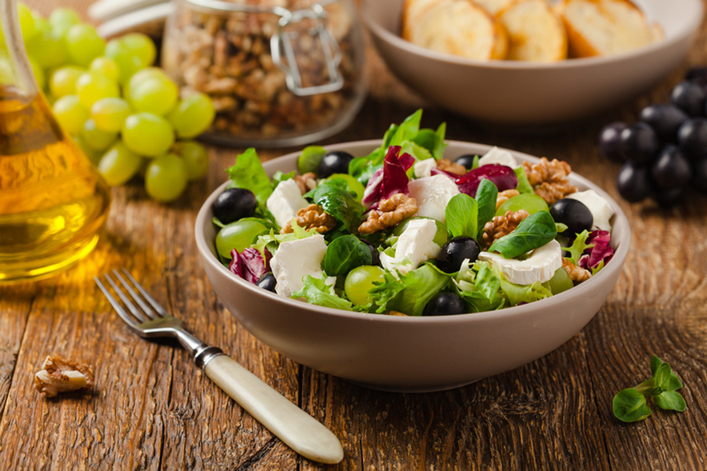

Gen-Diät MetaCheck® Rezepte
Deluxe Salat mit Walnüssen, blauen Trauben und gebackenem Honig-Ziegenkäse
Zutaten

- 50 g gemischter Salat (aus Lollo Bianco, Lollo Rosso)
- 100 g große, blaue Weintrauben
- 30 g Apfel
- 75 g rote Paprika
- 75 g gelbe Paprika
- 5 g Walnüsse
- Für den gebackenen Ziegenkäse:
- 45 g Vollkorn-Baguette
- 40 g Ziegenkäse-Rolle (Weichkäse)
- 5 g Honig
- Meersalz
- schwarzer Pfeffer
- Ein paar Thymianblätter
- Dressing:
- 10 g Honig
- 1 TL Senf, mittelscharf
- 1 EL Weißweinessig (Balsamico Bianco)
- 3 EL Wasser
- Etwas Meersalz
- Getränk:
- 200 ml frisch gepresster Orangensaft
Zubereitung
- Den Backofen auf Oberhitze 200° vorheizen.
- Den Salat gründlich waschen und trockenschleudern. Danach in Streifen schneiden.
- Das Obst und das Gemüse gründlich waschen. Den Apfel und die Paprika in Würfel schneiden.
- Das Baguette und die Ziegenkäserolle in gleich viele Scheiben schneiden. Die Baguettescheiben auf ein Backblech legen und den Ziegenkäse auf den Baguettescheiben verteilen.
- Den Honig über den Ziegenkäse tropfenweise verteilen und dann mit Salz und Pfeffer würzen und mit den Thymianblättchen bestreuen.
- Die Baguettescheiben auf der obersten Einschubleiste im Backofen für 3 Min. überbacken.
- (Alternativ kann der Ziegen-Weichkäse auch in Würfel geschnitten und direkt zum Salat gegeben werden oder ohne Bageuttescheiben überbacken werden. Die Baguettscheiben können dann einfach pur zum Salat gegessen werden).
- Wer möchte, kann den Apfel, statt ihn in Würfel zu schneiden, auch in dünne Scheiben schneiden und zwischen Baguette und Ziegenkäse im Ofen mit überbacken.
- In der Zwischenzeit aus Honig, Senf, Balsamico, Wasser und Meersalz ein Dressing herstellen.
- Den gemischten Salat mit dem Obst, Gemüse und den Walnüssen anrichten.
- Das Dressing darüber geben und mit den überbackenen Baguettscheiben anrichten.
- Dazu den frisch gepressten Orangensaft servieren.

CoGAP® möchte, dass Sie mit dem MetaCheck-Konzept basierend auf einer genetischen Stoffwechselanalyse gesund und schnell abnehmen.
Zur Gen-Diät MetaCheck